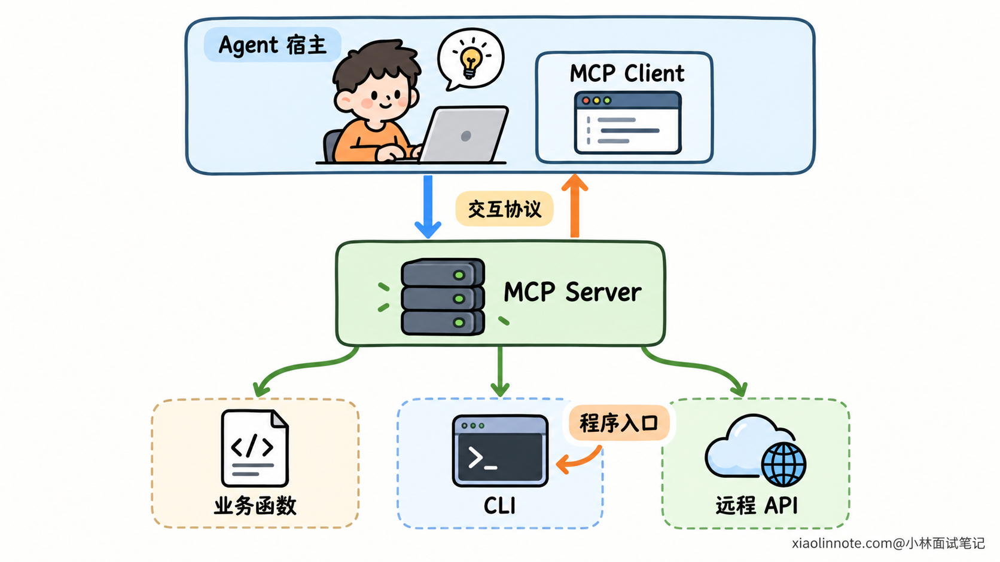
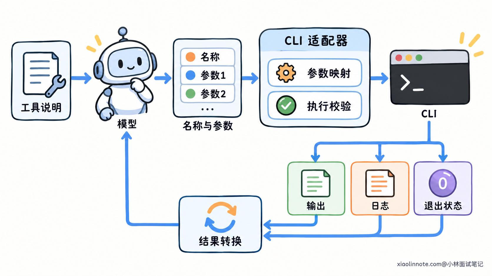
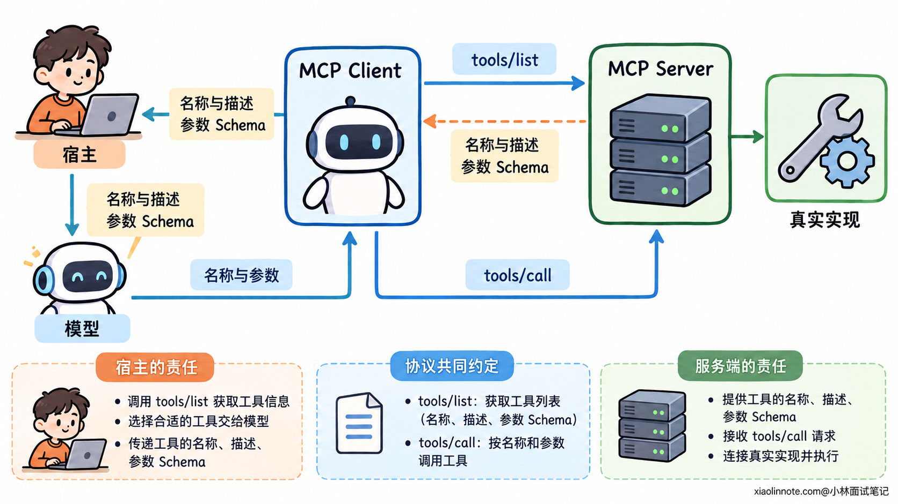
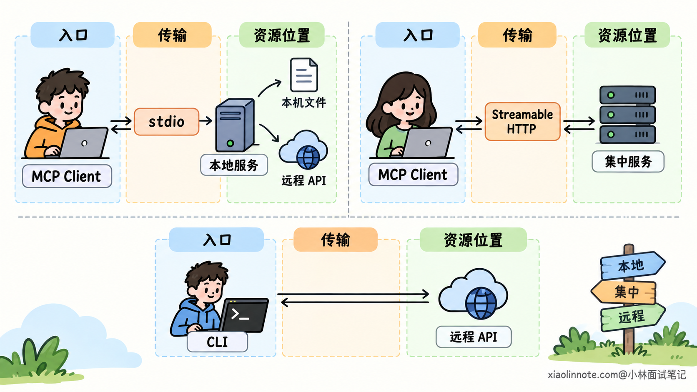
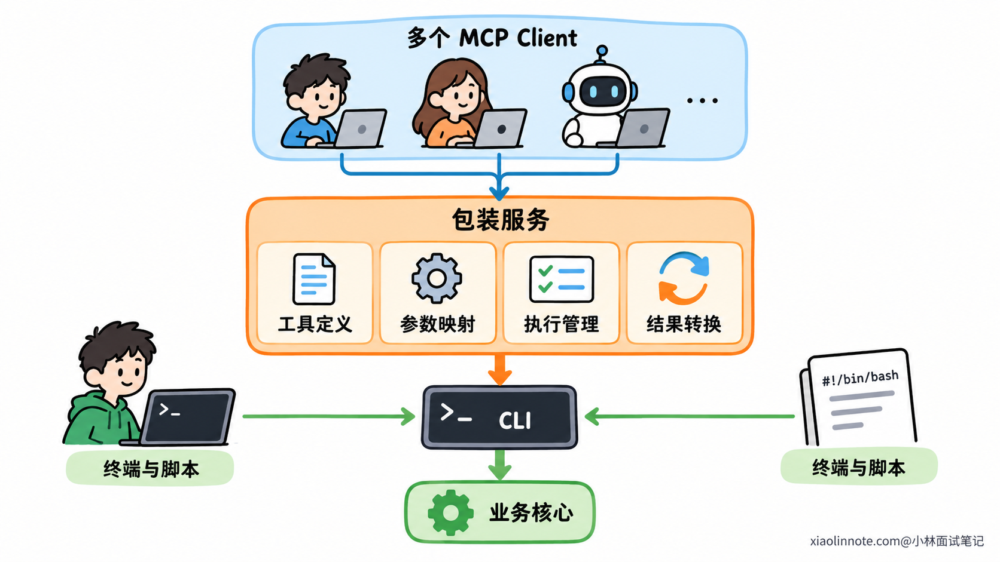

Agent 接入工具时应该如何选择 CLI 或 MCP？
👔面试官：Agent 要接入一项工具能力，应该选择 CLI 还是 MCP？
🙋♂️我：MCP 就是给 AI 用的，肯定比命令行更合适，把 CLI 换掉就行。
👔面试官：原来的命令还在供开发者和脚本使用，为什么一定要换？业务能力的实现和 Agent 的接入方式，是同一层东西吗？
🙋♂️我：那本地工具用 CLI，远程工具用 MCP。
👔面试官：MCP 可以通过标准输入输出连接本地进程，CLI 也可以请求远程接口。你的划分依据是什么？
🙋♂️我：CLI 已经能输出 JSON，直接让 MCP 客户端启动它就行。
👔面试官：JSON 是一种数据格式。客户端怎样发现工具、理解参数并发起调用，普通 CLI 都按 MCP 的约定处理了吗？
咱们先厘清两者各自负责的环节，再从接入需求和维护成本推导选择依据。
💡 简要回答
主要看调用方的接入需求和维护成本。CLI 提供命令行执行入口，MCP 约定客户端与服务端怎样发现和调用能力，两者可以组合，不一定要互相替换。
如果只有一个可控的 Agent 宿主，已经有稳定的 CLI，直接适配通常更简单：宿主维护工具说明，把模型生成的参数转换成命令参数，再解析执行结果。如果一项能力要被多个兼容 MCP 的宿主复用，MCP 就更有价值，工具描述、参数结构和调用方式可以通过统一协议提供，减少重复接入。
已有 CLI 可以由 MCP Server 包装，业务逻辑继续复用。部署位置则要单独考虑：MCP 能通过 stdio 连接本地进程，也能通过 Streamable HTTP 提供网络服务；CLI 本身也可以访问远程 API。最终还要比较依赖安装、版本维护、调用开销和权限管理，不能只按「本地用 CLI、远程用 MCP」来选。
📝 详细解析
先分清执行入口与接入协议
接入工具，除了让某段代码运行起来，还要让 Agent 的宿主知道这项能力叫什么、接受哪些参数，以及返回什么结果。
这里的宿主，是运行模型调用、管理工具并组织任务的应用程序。模型负责根据材料选择动作，宿主负责把动作请求送到实际实现。
CLI 主要提供一个程序入口。调用方指定可执行程序、子命令和参数，程序执行后交回输出与退出状态。它可以供人在终端使用，也可以由另一个程序启动。
MCP，也就是 Model Context Protocol，规范的是客户端与能力服务之间的交互。服务端按照协议提供工具信息，客户端按照协议发现并调用它，具体业务怎样实现则留给服务端。
因此，MCP Server 后面可以连接业务函数、已有 CLI 或远程 API。MCP 规定交流方式，不要求把底层算法改写成某种新的形式。
可以把它们放在同一条链路里看：
Agent 宿主 -> MCP 客户端 -> MCP Server -> CLI 或业务函数 -> 实际资源
CLI 可以是这条链路中的执行入口，MCP 可以是它外面的接入层。把两者作为完全互斥的选择，就会混淆它们所在的层次。

直接调用 CLI，Agent 侧还需要做哪些适配？
有一个命令能执行，不代表模型自然知道该怎样使用它。
直接接入 CLI 时，通常由宿主提供工具名称、用途和参数说明。模型生成结构化请求以后，宿主把参数映射成程序参数，启动 CLI，再把真实结果转换成模型能够接收的工具返回。
比如业务工具接受一个文件标识，CLI 接受文件路径，适配器就需要解析标识，并检查路径是否处于允许范围。这项转换属于接入代码，不能仅靠命令帮助文字完成。
工具输出也需要适配。CLI 可能同时产生结果、诊断日志和退出状态，宿主需要按约定解释它们，不能把所有终端文字拼在一起就当成业务结果。
这一方式的优势是链路短，已有程序可以直接使用。调用方和命令都由同一个团队维护时，一份清楚的适配器往往就够了。
CLI 也能提供帮助或自定义机器可读描述，但普通 CLI 并没有普遍遵循一套面向 Agent 的工具发现与调用协议。如何获取说明、转换参数和理解结果，仍然需要调用方与工具协商。
另一种接法是向模型提供通用命令执行能力，让它自行选择命令。这减少了一部分专门映射，却扩大了模型可以提出的操作范围，也依赖它对命令的理解。固定业务工具和通用终端工具，是两种不同的能力暴露方式。

MCP 统一了哪些交互，又留下哪些实现责任？
MCP 给客户端与服务端提供共同的工具发现和调用约定。
客户端可以通过 tools/list 获取可用工具。工具信息包含名称、用途描述和输入 Schema。Schema 是参数的结构定义，例如字段类型、必填项和取值限制。
宿主根据这些信息，把适合当前任务的工具提供给模型。模型决定调用后，客户端通过 tools/call 发送工具名和参数，服务端执行并返回结果。
这里仍然有明确分工：模型生成动作请求，客户端传递请求，服务端调用实际实现。模型支持工具调用，与宿主支持 MCP，也需要分别判断；不能因为模型能生成参数，就认为它已经实现了 MCP 客户端。
协议还约定了工具结果的表达方式，包括内容、可选的结构化结果，以及错误的表示。具体业务字段仍由工具定义，不会因为接入 MCP，就让所有服务返回相同的数据含义。
这份统一约定减少了每个宿主重新设计接入格式的工作。兼容的客户端可以理解服务端提供的工具，而不必为每项能力再约定一种全新的消息方式。
不过，标准化不等于零适配。宿主仍然需要决定向模型展示哪些工具、怎样组织上下文；服务端仍然负责业务实现、参数校验、权限检查和错误处理。
不同协议版本与客户端支持的功能也可能不同。实际接入要确认双方兼容，不能把某一版本的交互细节当成所有实现永远相同的规则。

本地或远程，是独立于 CLI、MCP 的部署选择
执行入口和交互协议分清以后，再看部署位置就容易了。
MCP 的 stdio 传输，是通过进程的标准输入输出交流。客户端通常启动本地服务进程，向它写入协议消息，再读取响应。这个服务可以访问本机资源，也可以在内部调用远程系统。
普通 CLI 同样可能使用标准输入输出，但通道相同不代表协议相同。
CLI 可以接收业务参数，打印一份 JSON 结果，然后退出。stdio MCP 服务则需要收发符合协议的消息，处理工具发现、调用和对应结果。JSON 只是编码形式，普通业务 JSON 不能直接当成 MCP 消息。
stdio 的协议输出还需要保持可解析，普通日志不能混进 stdout 的消息通道。服务端可以把诊断信息写到 stderr，由调用方按需要处理。
Streamable HTTP 则通过 HTTP 承载 MCP 交互，可以用于集中部署的网络服务。这样多个客户端可以连接同一服务，依赖与版本也可以集中维护。
CLI 也能访问远程系统，只是命令入口运行在调用方环境。它还可以作为某个网络服务的客户端，所以「CLI」本身没有规定业务资源必须在本机。

需要处理本机文件时，本地入口往往容易获取资源；需要多人共享一个受控后台能力时，集中服务可能便于运维。它们是资源与部署条件带来的选择，不能直接对应成 CLI 与 MCP 的分界。
先比较接入复用，再比较运行和维护成本
选型的第一项依据，是谁需要调用这份能力，以及这些调用方支持什么接口。
一个可控宿主接入一个成熟命令，直接适配的成本通常较小。团队知道命令的版本和格式，工具数量也有限，就没有必要仅为更换形式增加协议层。
多个兼容 MCP 的宿主要共享能力时，标准化接入的收益更明显。服务端提供统一工具定义，客户端复用现有协议支持，能够减少各自维护一套参数与结果映射的工作。
这种收益需要实际兼容。一个宿主虽然标注支持 MCP，也可能只支持部分功能或传输方式。身份配置、结果呈现和工具选择方式，仍要在目标宿主上验证。
接入之外，还有运行成本。本地命令可能涉及进程启动、依赖加载和数据传递；本地 MCP 服务可能持续运行并占用资源；远程服务则需要处理网络延迟、连接、认证和可用性。
这些是具体实现的成本，不是某个名称天然附带的性能结论。CLI 可以连接常驻后台，MCP Server 也可能为每次调用启动一个 CLI 子进程。
部署责任同样重要。工具在各台机器运行，就要处理安装、权限和版本一致性；集中运行，就要处理共享服务的容量、身份传递与故障影响。
可以据此比较：
| 实际需求 | 更值得评估的方式 |
|---|---|
| 单一宿主，已有稳定命令，环境可控 | 直接适配 CLI |
| 多个兼容 MCP 的宿主共享能力 | 提供 MCP 接入层 |
| 原命令还要服务终端、脚本和自动化任务 | 保留 CLI，再按需包装 MCP |
| 能力本来就由常驻后台服务提供 | MCP Server 调用业务接口，不必绕一次 CLI |
| 依赖本机文件或设备 | 优先考虑可访问这些资源的本地部署 |
| 需要集中更新与多用户访问 | 评估网络服务及其运维、鉴权成本 |
这张表提供的是判断方向。最终实现可以组合，部署位置也需要单独选择；调用方更多，并不自动意味着每一种工具都适合集中运行。
用 MCP 包装已有 CLI，怎样保留现有能力？
已有 CLI 的参数与结果稳定，且已经供开发者和自动化任务使用时，可以保留它，新增一层 MCP Server。
服务端声明业务工具，收到调用以后，把协议参数转换成 CLI 参数，启动原程序，再根据退出状态和业务结果构造 MCP 返回。
这层包装统一的是对外接入，复用的是已有执行逻辑。原 CLI 不需要理解每一个 Agent 宿主，宿主也不用直接适配命令行格式。
包装层不能只把两边的文本原样转发。参数类型、结果内容和错误语义都需要对齐。例如 CLI 正常执行但没有匹配记录，与程序启动失败，是不同情况，服务端应保留这一区别。
超时与取消也要核对实际行为。停止等待不代表底层进程已经终止，结束子进程也不代表远端任务已经取消。包装层需要与底层实现配合报告真实状态，而不是把所有异常都转成一句「失败，可重试」。

组合方式也会增加维护工作。CLI 接口升级，包装层要检查是否仍然匹配；定位故障时，需要区分协议层、参数转换、命令执行与业务后台。
如果已有业务函数方便直接调用，MCP Server 可以复用函数；如果能力已经在后台 API 中实现，也可以直接访问 API。包装 CLI 是保护既有实现的一种办法，不是 MCP 服务必须采用的结构。
协议选择不能替代权限、可靠性和上下文设计
最后还要防止把标准协议当成一整套运行保障。
CLI 子进程能访问什么，取决于执行身份和环境；MCP Server 能操作什么，取决于其实现与业务权限。服务标注支持 MCP，不会自动让它拥有更严格的资源边界。
集中服务尤其需要按当前调用身份校验对象权限。工具出现在列表里，只说明它可被发现，不代表用户有权操作任何资源。工具描述里的「只读」等标注，也不能替代对实际实现的检查。
可靠性同样需要业务机制配合。协议请求失败，不一定意味着外部写操作没有发生；重复提交是否会产生重复影响，仍要靠稳定操作标识、去重和结果查询处理。
Token 成本也取决于宿主怎样向模型提供信息。CLI 可以附带很长的帮助文字，MCP 也可以只向模型提供当前需要的工具定义。暴露多少工具、描述多长、结果怎样裁剪，才会直接影响上下文占用。
因此，选型不能简单归结为「哪个更安全、哪个更省 Token」。先确定要解决的接入和部署问题，再检查对应实现能否满足权限、可靠性与成本要求，比较才有实际依据。
🎯 面试总结
开头想用 MCP 替换所有 CLI，混淆了执行入口与交互协议。CLI 可以提供已有能力的运行入口，MCP 可以在外面提供统一的发现和调用，两者能够组合。
本地与远程属于部署选择。MCP 可以使用 stdio 或 Streamable HTTP，CLI 也可以访问网络服务；普通 JSON 输出只是一种数据格式，不能自动成为 MCP 协议实现。
单一可控宿主直接调用成熟命令，通常容易落地；多个兼容宿主复用能力时，MCP 接入层更有价值。选择还要结合依赖部署、版本维护和运行成本，权限与可靠性则由实际执行机制保障。